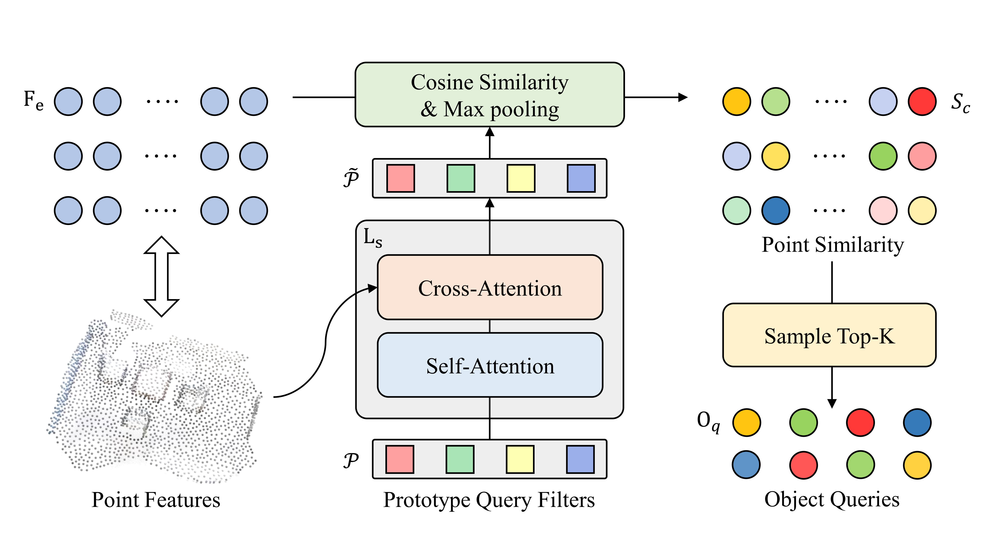

ChuXin Wang1* Jiacheng Deng1* Jianfeng He1 Tianzhu Zhang1,3 Zhe Zhang3 Yongdong Zhang1
1University of Science and Technology of China 2China Academy of Space Technology
3Deep Space
Exploration Lab
*Equal contribution
[Paper] [Code] [Website] [BibTeX]
3D object detection in point cloud aims at simultaneously localizing and recognizing 3D objects from a 3D point set. However, since point clouds are usually sparse, unordered, and irregular, it is challenging to learn robust point representations and sample high-quality object queries. To deal with the above issues, we propose a Long-short rangE Adaptive transformer with Dynamic sampling (LeadNet), including a point representation encoder, a dynamic object query sampling decoder, and an object detection decoder in a unified architecture for 3D object detection. Specifically, in the point representation encoder, we combine an attention layer and a channel attentive kernel convolution layer to consider the local structure and the long-range context simultaneously. In the dynamic object query sampling decoder, we utilize multiple dynamic prototypes to adapt to various point clouds. In the object detection decoder, we incorporate a dynamic Gaussian weight map into the cross-attention mechanism to help the detection decoder focus on the proper visual regions near the object, further accelerating the training process. Extensive experimental results on two standard benchmarks show that our LeadNet outperforms the 3DETR baseline by 11.6% mAP50 on the ScanNet v2 dataset and achieves the new state-of-the-art results on ScanNet v2 and SUN RGB-D benchmarks for the geometric-only approaches.
The architecture of our LeadNet consists of three major components, including the Point Representation Encoder, the Object Query Sampling Decoder, and the Object Detection Decoder.The downsampling point cloud is first obtained through the frequently-used SA module.Then the point representation encoder, composed of an attention branch and a channel-wise kernel convolution branch, extracts point representations from the downsampling point cloud.Next, and based on these point representations, the object query sampling decoder samples a certain number of qualified object queries.Finally, in the object detection decoder, these object queries aggregate features across the entire scene with the cross-attention mechanism for the subsequent object detection. For more details, please refer to the text.
|
|
The structure of the point representation encoder. In the point representation encoder, we introduce the channel-wise kernel convolution into the self-attention mechanism to efficiently extract the local structure feature. |
|
The structure of object query sampling decoder. We introduce a set of learnable prototype query filters that can dynamically adapt to the specific scene. And we calculate the cosine similarity between the points and the prototypes to sample a certain number of object queries. |

|
Comparison on the ScanNet V2 validation set. We show per-category results of average precision (AP) with a 3D IoU threshold of 0.25 and a mean of AP across all semantic classes. L denotes the decoder depth. Since the per-category results and checkpoints of the training model are not available, we only show the mean of AP across all semantic classes in T3D.
Comparison on the ScanNet V2 validation set. We show per-category results of average precision (AP) with a 3D IoU threshold of 0.50 and a mean of AP across all semantic classes. L denotes the decoder depth.
Comparison on the SUN RGB-D validation set. We show per-category results of average precision (AP) with a 3D IoU threshold of 0.25 and a mean of AP across all semantic classes. L denotes the decoder depth. Since the per-category results and checkpoints of the training model are not available, we only show the mean of AP across all semantic classes in T3D.
Comparison on the SUN RGB-D validation set. We show per-category results of average precision (AP) with a 3D IoU threshold of 0.50 and a mean of AP across all semantic classes. L denotes the decoder depth.
|
|
Last update: Mar, 2021